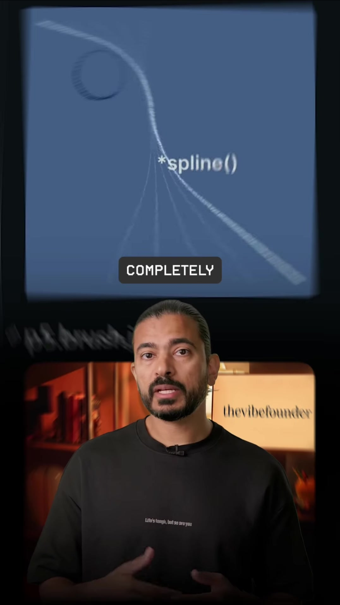
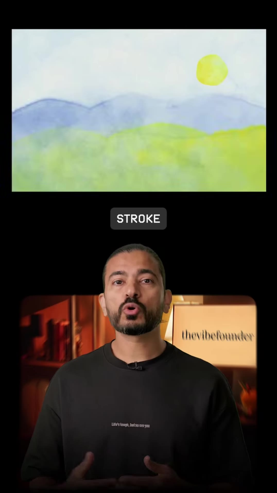
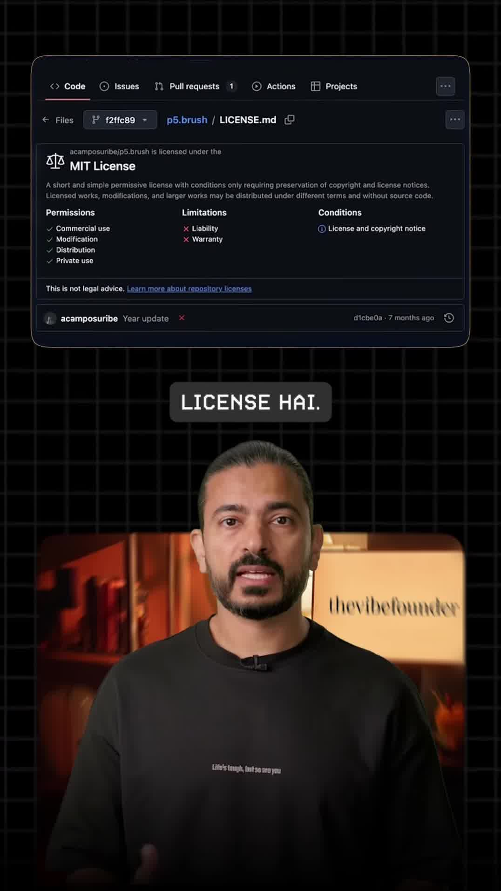

Executive Summary
Generative art created with canvas libraries like p5.js often suffers from a sterile, mathematical aesthetic: lines are infinitely smooth vectors, fills are flat RGB blocks, and geometry lacks the tactile texture of physical media.
p5.brush (developed by Álvaro Campos Uribe at acamposuribe/p5.brush) is an open-source, MIT-licensed drawing engine built on top of p5.js and WebGL. Rather than rasterizing primitive bezier curves, p5.brush computes stroke trajectories as continuous mathematical splines populated by dense, parameterized micro-stamps. This simulates the physical friction, bleeding, and paper-grain granulation of pencils, charcoal, markers, spray paint, and layered watercolor washes.
When paired with AI code generators like Claude 3.7 / 3.5 Sonnet, developers can generate organic, museum-grade generative sketches and hand-drawn animations directly from text prompts.
Visual Demonstrations

brush.spline()) generating natural organic path curvature.

Installation & Setup
Include p5.js followed by p5.brush.js in your HTML bundle, or import it into modern bundlers (Vite/Next.js):
<!-- CDN Installation -->
<script src="https://cdn.jsdelivr.net/npm/p5@1.9.0/lib/p5.min.js"></script>
<script src="https://cdn.jsdelivr.net/npm/p5.brush@latest/dist/p5.brush.min.js"></script>Core Mechanics: How p5.brush Creates Physical Texture
- Stamp Frequency & Pressure Dynamics: Rather than drawing continuous anti-aliased vector paths, the engine scatters thousands of microscopic brush tip stamps along the path vector. Pressure curves dictate opacity, scatter radius, and pigment density.
- Paper Granulation Shader: A custom WebGL fragment shader simulates paper surface heightmaps, causing watercolor pigment to pool in simulated crevices.
- 11+ Pre-Calibrated Mediums: Built-in presets include
watercolor,marker,charcoal,pencil,spray,ink, andpastel.
Minimal Working Example: Watercolor Spline Canvas
function setup() {
createCanvas(800, 800, WEBGL);
background("#f7f4ed"); // warm paper tone
// Initialize brush engine with simulated paper texture
brush.load();
brush.set("watercolor", "#3b6cb5", 40); // brush type, color, weight
// Set bleed and pigment flow parameters
brush.flow({
bleed: 0.15,
pressure: 0.8,
opacity: 0.65
});
// Draw organic natural curves using spline control points
brush.beginStroke();
brush.spline([
[100, 400],
[250, 200],
[500, 600],
[700, 300]
]);
brush.endStroke();
}Prompting Claude for Generative Painterly Art
Because Claude understands both p5.js and the p5.brush API, providing the syntax signature produces instant, interactive browser art:
"Create an interactive p5.js sketch using p5.brush with WebGL mode. Draw a layered Japanese mountain landscape during sunset using the 'watercolor' and 'charcoal' brushes. Use warm pastel colors (#f3c68f, #e27d60, #41b3a3) with subtle bleed effects and paper grain."
Key Takeaways for Creative Technologists
- Elevate Web Aesthetics: Interactive hero backgrounds built with p5.brush look like artisanal hand-crafted artwork rather than generic vector animations.
- Deterministic Reproducibility: Because brush stamps follow mathematical splines, animations can be seeded with
randomSeed()to deliver identical results on every page load. - Commercial Freedom: Fully open-source under the MIT license, free for client deliverables and web products.